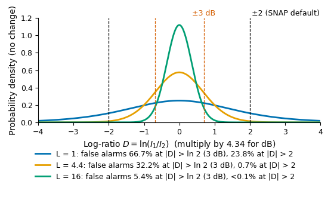

| SAR Concepts: SAR Change Detection | |
Change detection compares SAR images of the same place taken at different times. Because speckle is multiplicative, SAR change is measured with ratios rather than differences, and the false-alarm rate is set by the number of looks and the threshold. Many apparent changes come from the acquisitions themselves, so compare images with the same geometry and processing.
An intensity pixel is the backscatter times a unit-mean speckle term: I = μ · n (see Speckle). For two dates,
I1 / I2 = (μ1 / μ2) · (n1 / n2)
Where nothing has changed (μ1 = μ2), the ratio depends only on speckle, so its distribution is the same in dark fields and bright towns. A difference I1 − I2 has a standard deviation proportional to μ: bright areas would produce far more false alarms than dark ones (Rignot and van Zyl, 1993). The logarithm makes the ratio symmetric, so a halving and a doubling are equally large:
D = ln(I1 / I2)
DdB = 10 · log10(I1 / I2) = 4.34 · D
The difference of two images already in dB is this log-ratio in dB. Use calibrated, linear intensity (σ0 or γ0) as input. With amplitude, the log-ratio is half as large, and thresholds chosen for intensity no longer apply.
For two unchanged L-look intensities, D follows a known distribution whose width shrinks with L (Figure 1). A threshold that looks generous can still flag most unchanged pixels. At ±3 dB (a factor of 2) the false-alarm rate is 67% for single-look data, 32% at the ENL of a Sentinel-1 GRDH product (4.4), and 5% at 16 looks. Speckle reduction is therefore a prerequisite, not an option: multilook, filter both dates the same way, or average over objects such as fields.

Figure 1. Distribution of the log-ratio D of two unchanged images with L looks each: p(D) = Γ(2L) / Γ(L)2 · eLD / (1 + eD)2L. Dashed lines: ±3 dB and the SNAP default ±2 (a factor of e2 ≈ 7.4, or 8.7 dB).
Thresholds can be set from the no-change statistics for a chosen false-alarm rate, or found automatically from the histogram of D. Bazi et al. (2005) model the changed and unchanged classes with generalised Gaussian distributions and pick the threshold that minimises the classification error. Bovolo and Bruzzone (2005) analyse the log-ratio at several scales to keep detail near edges. A minimum mapping unit (ignoring isolated changed pixels) removes many remaining false alarms.
A long stack gives better statistics than a pair and shows when a change happened.
All operators below need coregistered input: a stack from Create Stack or Coregistration, or, for Polarimetric Change Detection, two coregistered products.
Change-Detection, menu Raster > Change Detection) uses
exactly two bands and divides the first selected band by the second. With no selection it takes the first two
intensity bands, else the first two amplitude bands. In a dual-pol or multi-date stack, select the two bands
explicitly; automatic selection may pair two polarisations of the same date. It writes log_ratio (natural logarithm,
default) and optionally difference, ratio and normalized_ratio
(I1 − I2) / (I1 + I2). Each output gets a mask
<band>_change: +1 above the upper threshold (default 2.0), −1 below the lower threshold
(default −2.0), else 0. The same two thresholds apply to every output, whatever its scale. Pixels where
either input is zero, negative or no-data are set to 0, so dB input (negative values) does not work.REACTIV-Change-Detection) needs band names that end with the
acquisition date (_ddMMMyyyy, as written by Create Stack) and amplitude or intensity bands;
complex input is converted to intensity. It writes hue, saturation and
value, and a mask change where saturation exceeds the Mask threshold (default 0.8).
With several polarisations it uses the largest CV. The saturation scale is centred on a CV of 0.2286, the
theoretical value for amplitude with about 4.9 looks, so it suits amplitude GRD stacks. Intensity input roughly
doubles the CV of stable pixels and shifts them up the scale.RPCA-Change-Detection) writes <band>_sparse per
input band and a mask <band>_change where the sparse part exceeds the Mask threshold
(default 0.05, in the units of the input band). Lambda defaults to 0.01. The _sparse band itself is
clipped at 0, so only pixels brighter than the stable scene appear; darkening never does. The matrix has one
column per selected band (dates and polarisations alike), and the decomposition runs per processing tile.Polarimetric-Change-Detection) takes a reference and a
secondary C2, C3, T3 or quad-pol product and writes TestStatistic, ChangeProbability and
ChangeMask (window 5, ENL 5 and significance level 0.0001 by default).log_ratio, a meaningless value for normalized_ratio (which lies between −1 and
1), and depend on the image units for difference.log_ratio means the first band is
brighter.